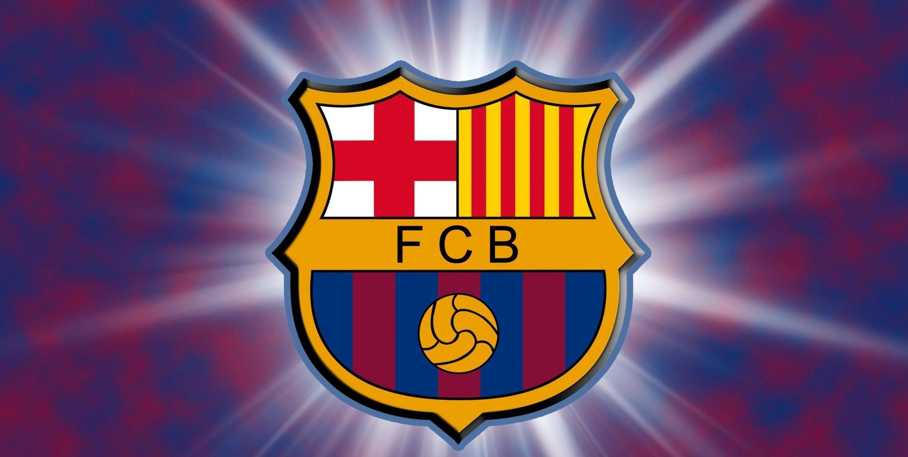
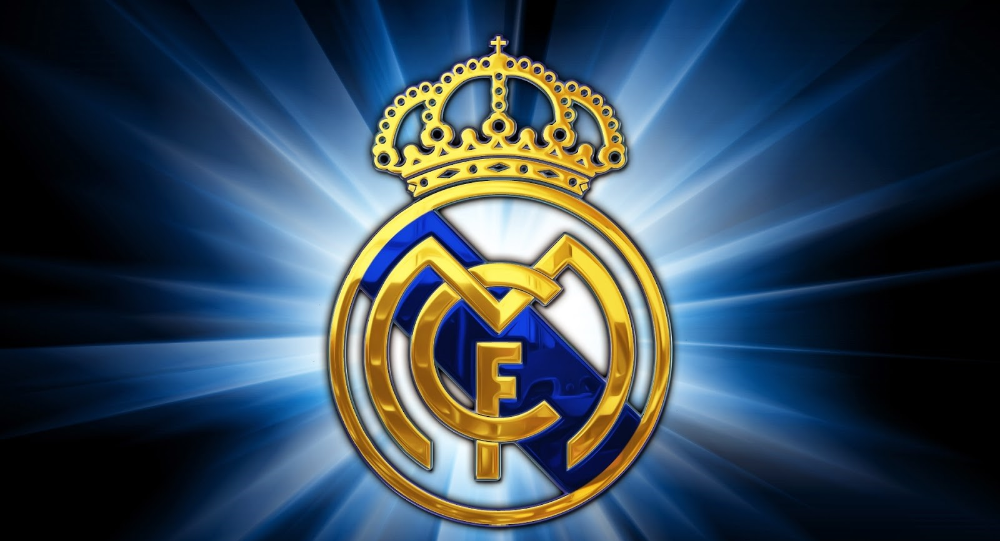
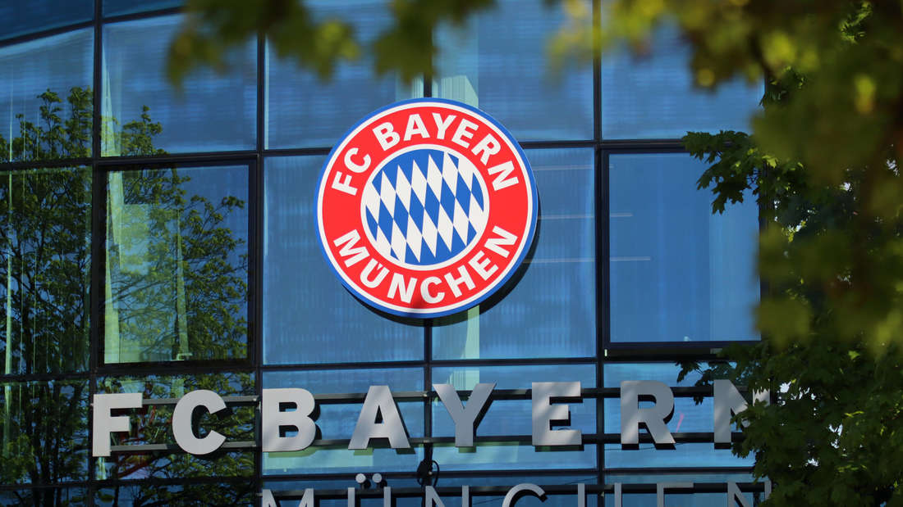

Kataloński wielosekcyjny klub sportowy z Barcelony (Hiszpania), istniejący od 29 listopada 1899 r., czyli momentu założenia męskiej drużyny piłkarskiej przez grupę Szwajcarów, Anglików, Katalończyków i Niemca. Z czasem stał się katalońską instytucją o dużym znaczeniu społecznym. Jego motto to Més que un club (pol. Więcej niż klub).
Męska drużyna piłkarska Barçy zdobyła m.in.: 5x Ligę Mistrzów, 26x Ligę Hiszpańską, 31x Puchar Hiszpanii, 3x Klubowe Mistrzostwo Świata, 4x Puchar Zdobywców Pucharów, 5x Superpuchar Europy i 14x Superpuchar Hiszpanii.

Angielski, profesjonalny klub piłkarski mający swoją siedzibę w zachodnim Londynie, w dzielnicy Hammersmith and Fulham. Został założony 10 marca 1905 roku, obecnie gra w Premier League i większość sezonów spędził w najwyższej klasie rozgrywkowej w Anglii. Klub Chelsea F.C. jest sześciokrotnym mistrzem Anglii, osiem razy zdobył Puchar Anglii, pięć razy Puchar Ligi Angielskiej i dwukrotnie zwyciężył w rozgrywkach Ligi Europy UEFA oraz Pucharu Zdobywców Pucharów. Chelsea jest również dwukrotnym triumfatorem Ligi Mistrzów UEFA z sezonu 2011/2012 i 2020/2021.
Pierwszym tryumfem klubu było zdobycie tytułu mistrza Anglii w 1955 roku. Chelsea wygrała kilka rozgrywek w latach 60. i 70., jednak później nie osiągnęła żadnego większego sukcesu do 1997 roku. Ostatnia dekada była najbardziej udaną w historii klubu. Chelsea zdobyła kolejne tytuły Mistrza Anglii w 2005, 2006 oraz w 2010 roku, zaś w 2008 po raz pierwszy dotarła do finału Ligi Mistrzów. Chelsea swoje domowe mecze rozgrywa na stadionie Stamford Bridge mogącym pomieścić 41 837 kibiców, znajdującym się w Zachodnim Londynie. Występują na nim od czasu założenia klubu w 1905 roku. W 2003 roku klub został kupiony przez rosyjskiego magnata naftowego Romana Abramowicza.

Hiszpański klub sportowy powstały w 1902. Słynie głównie z sukcesów istniejącej od chwili założenia drużyny piłki nożnej, która 35 razy zdobyła mistrzostwo Hiszpanii, 14 razy Puchar Europy/Ligę Mistrzów, a także wiele innych trofeów, w tym przyznany w 2000 przez FIFA tytuł najlepszego klubu w XX wieku. Od 1947 drużyna rozgrywa domowe spotkania na stadionie Santiago Bernabéu, nazwanym na cześć byłego prezesa, za którego czasów klub zdobył najwięcej trofeów. Klub odegrał ważną rolę w historii hiszpańskiej i światowej piłki nożnej – to z inicjatywy jego działaczy powstał Puchar Króla. Klub reprezentował również Hiszpański Związek Piłki Nożnej, stając się jednym ze współzałożycieli FIFA w 1904. W 1928 znalazł się w pierwszym zestawie drużyn tworzących Primera División, zaś w 1955 stał się jedną z drużyn biorących udział w pierwszej edycji Pucharu Europy, którą następnie wygrał, broniąc to trofeum cztery razy z rzędu. Jest również jedynym klubem w historii, który po zmianie nazwy tych rozgrywek na Liga Mistrzów UEFA w 1992 zdobył to trofeum trzy razy z rzędu (2016, 2017, 2018).

Niemiecki klub sportowy z siedzibą w Monachium, Bawaria. Jest najbardziej znany ze swojej profesjonalnej drużyny piłkarskiej, najbardziej utytułowanej drużyny w historii niemieckiej piłki nożnej, rekordzistę pod względem zdobytych mistrzostw (31) i pucharów krajowych (20), która występuje na co dzień w Bundeslidze, najwyższej klasie rozgrywkowej w piłce nożnej w Niemczech. Klub został założony w 1900 roku przez jedenastu piłkarzy pod wodzą Franza Johna. Największy sukces przypadł w połowie lat 70 XX wieku, kiedy pod dowództwem Franza Beckenbauera wygrał Puchar Europy trzy razy z rzędu (1974–76). Bayern dotychczas osiągnął jedenaście finałów Pucharu Europy (obecnie pod nazwą Ligi Mistrzów UEFA), ostatnio zdobywając szósty tytuł w 2020 r. Bayern zdobył także jeden Puchar UEFA, jeden Puchar Zdobywców Pucharów, jeden Superpuchar Europy, jedno klubowe mistrzostwo Świata i dwa Puchary Interkontynentalne, co czyni go jednym z najbardziej utytułowanych klubów na arenie międzynarodowej. Bayern należy do klubów, które skompletowały wszystkie europejskie puchary (oprócz Bayernu dokonał tego zespoły: AFC Ajax, Juventus F.C., Chelsea F.C. oraz Manchester United F.C.). Od czasu utworzenia Bundesligi Bayern wygrał ją 30 razy, a od 2013 roku wygrywa ją nieprzerwanie, co jest dotychczas najdłuższą mistrzowską serią w Bundeslidze.